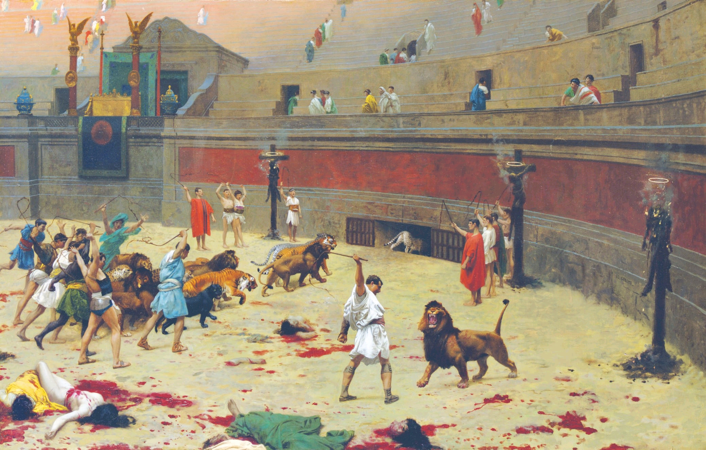

The Romans punished a wide variety of crimes with execution. Executions were often public, seen as quality entertainment. Criminals were beheaded, fed to wild beasts, or tied to the tails of horses and dragged to death, all for the entertainment of crowds. These deaths were part of lavish games that lasted several days in arenas such as the Colosseum.
Some crimes corresponded with particular punishments. Patricide (killing your parents or grandparents), for example, was regarded as one of the worst crimes a Roman could commit. The punishment was to be sewn into a sack with a snake, a monkey, a rabid dog, and a cockerel, then thrown into a river. However, the most painful and degrading form of execution in ancient Rome was crucifixion. This was reserved only for non-citizens who had committed the most egregious of crimes and prisoners would be stripped naked and nailed to a wooden cross. It took days to die, during which the victim would be in excruciating pain bleeding from the inside out.
